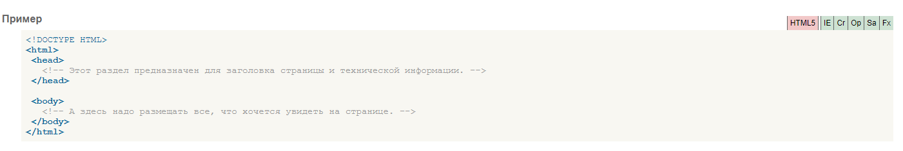

Описание
Тег -html-
Является контейнером, который заключает в себе все содержимое веб-страницы, включая теги -head- и -body-.
Открывающий и закрывающий теги -html- в документе необязательны, но хороший стиль диктует непременное их использование. Как правило, тег -html-
идет в документе вторым, после определения типа документа (Document Type Definition, DTD), устанавливаемого через элемент .
Закрывающий тег -html- должен всегда стоять в документе последним.
